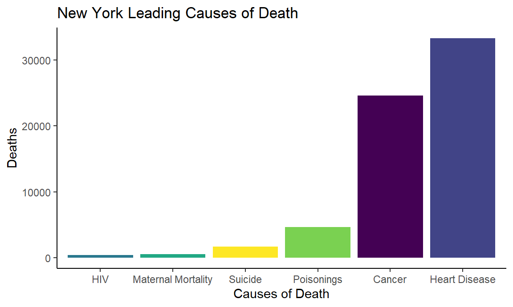
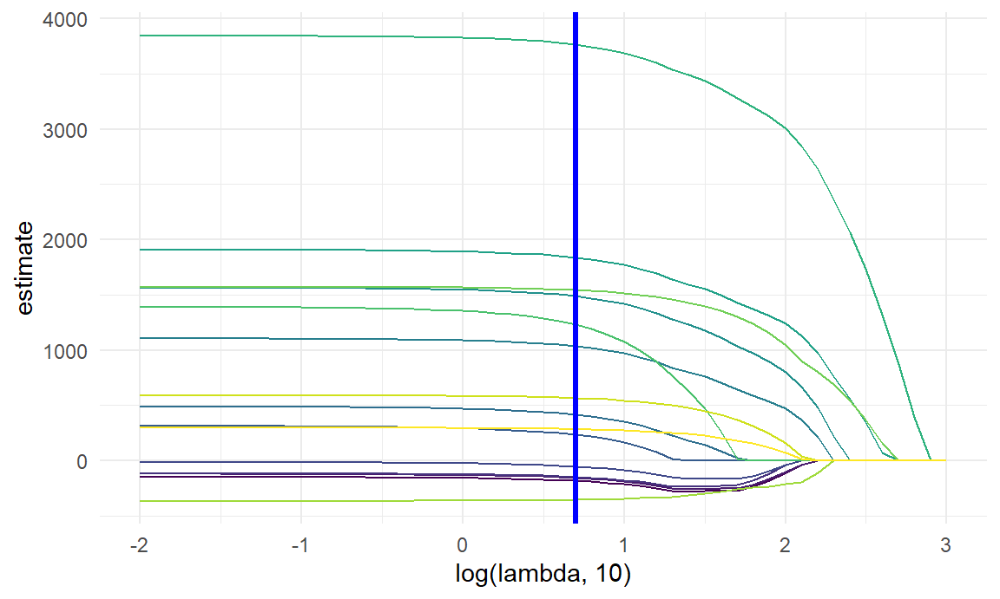
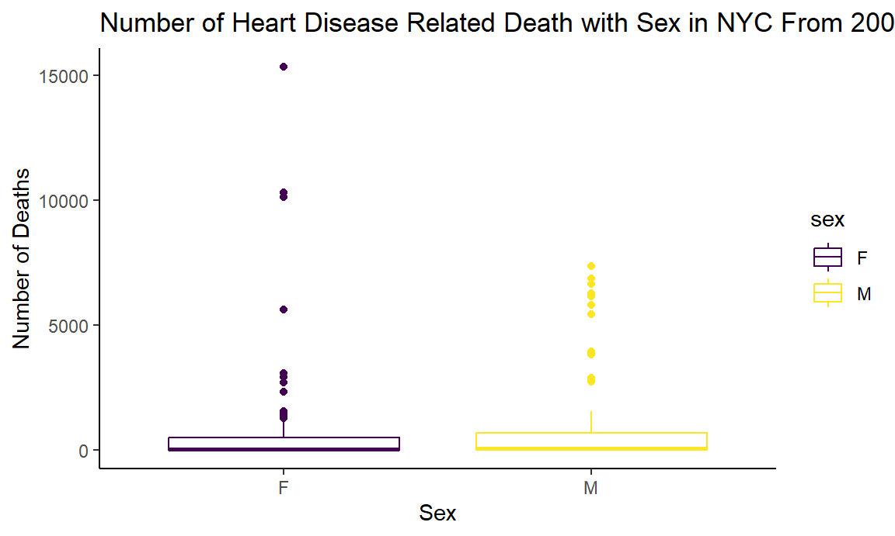
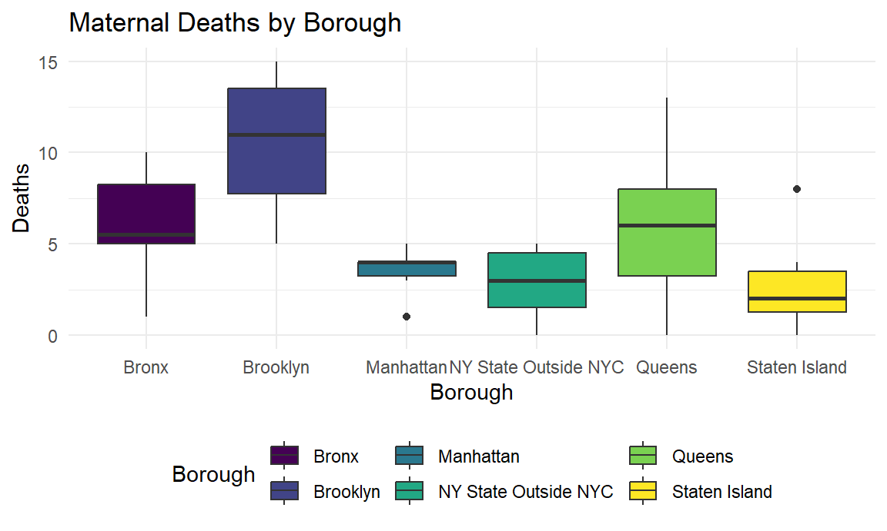
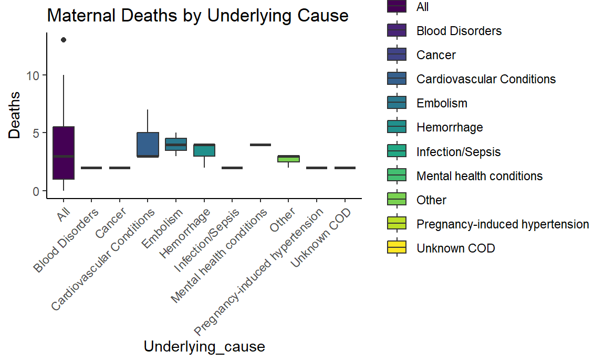
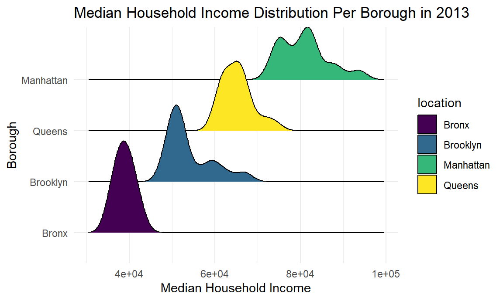
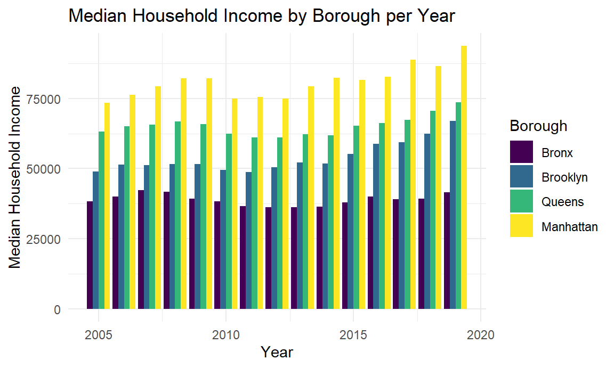
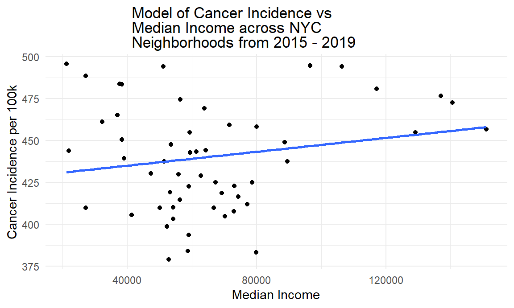
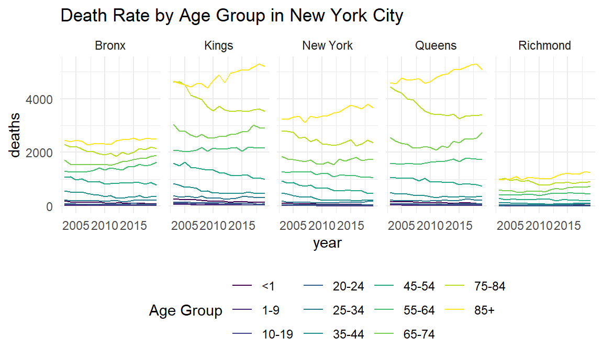

Final Report
Motivation
As a group, we are inspired by the historical changes in the health problems in a community, mortality patterns, and leading causes of death that we learned in our Principles of Epidemiology class. In 1839 cholera was reported as the primary cause of death in England. Nowadays, the leading cause of death in England, like in the US and most industrialized countries, is heart disease, with social and racial disparities in mortality from chronic diseases becoming the major challenge.
For this project, we started with a general question: What are the leading causes of death in NYC? We decided to focus on NYC as it’s the largest city in the US and one of the world’s most diverse cities. We found that heart disease, cancer, accidents, chronic lower respiratory disease, and stroke are the most prevalent causes in the city. We also considered other pertinent causes of death such as pregnancy-related mortality. This initial exploratory analysis led us to want to explore specific questions based on our interests and research experience. We chose the period of 2007-2019 to focus on the modern causes of death in the city to avoid confounding factors of death due to the COVID-19 outbreak (2019 onward).
Questions and Planned Analyses
Each team member decided to focus on a specific cause of death and an individual-level factor (i.e., age, income, education level, etc.) that contributed to the changes in leading causes of death observed in the past 12 years. Below are some of the specific questions we explore in our analysis:
Heart Disease Related Death is one of the top leading causes of death in New York City. What is the relationship between age groups, sex, race, and heart disease related death?
There has been a notable stark discrepancy in maternal mortality (pregnancy-related deaths) in minority women. Is there a relationship between pregnancy-related deaths and the predictors of race and other factors?
We were also interested in examining cancer incidence and mortality rates as cancer of all forms is the second leading cause of death in New York City. What are the different social factors that can play a role in cancer rates we examined income levels across New York City? Are these predictors of cancer incidence and mortality rates across the city?
HIV/AIDS is no longer a death sentence, but it still disproportionately affects low-and-middle-income countries and minority communities in the USA. What are the current trends in HIV/AIDS diagnosis and mortality rate in NYC? Do these trends vary by race and ethnicity? Is the HIV/AIDS mortality rate the same in all NYC neighborhoods?
There are stark differences between the leading causes of death among age groups. What were the leading causes of death by age group? Is there a relationship between age group as a predictor of Suicide Deaths and Opioid Poisoning Deaths?
leading %>%
ggplot(aes(y = Deaths, x = reorder(Disease, Deaths), fill = Disease))+
geom_bar(stat = "identity")+
theme_classic()+
labs(
x = "Causes of Death",
y = "Deaths",
title = "New York Leading Causes of Death"
)+
theme(legend.position = "none")
Data Processing and Cleaning
- Heart Disease Related Deaths (Dataset)
Data was obtained from the Health Department of New York State. The
dataset ‘Vital Statistics Deaths by Region and Age-Group by Selected
Cause of Death Beginning 2003’ was tidied to only include heart disease
related deaths. We factored the age_group as <1, 1-9,
10-19, 20-24, 25-34, 35-44, 45-54, 55-64, 65-74, 75-84, 85+ and
race_or_ethnicity as White Non-Hispanic, Black
Non-Hispanic, Hispanic, Other Non-Hispanic. We factored sex
as Male and Female. The tidied dataset has 200 rows and 4 columns.
The columns of interest for our analysis are:
deaths : number of deaths related to one certain type of
disease
sex : gender
age_group : age group
race_or_ethnicity : race group
death_df = read_csv("data/Vital_Statistics_Deaths_by_Region_and_Age-Group_by_Selected_Cause_of_Death___Beginning_2003.csv") %>%
janitor::clean_names() %>%
filter(selected_cause_of_death == "Diseases of the Heart",
race_or_ethnicity != "Not Stated") %>%
mutate(
age_group = as.factor(age_group),
age_group = fct_recode(
age_group, "<1" = "1", "1-9" = "2", "10-19" = "3", "20-24" = "4", "25-34" = "5", "35-44"="6", "45-54" = "7", "55-64" = "8", "65-74" = "9", "75-84" = "10", "85+" = "11"),
sex = as.factor(sex),
sex = fct_recode(sex, "M" = "1", "F" = "2"),
race_or_ethnicity = as.factor(race_or_ethnicity),
race_or_ethnicity = fct_recode(race_or_ethnicity, "White Non Hispanic" = "1",
"Black Non Hispanic" = "2", "Hispanic" = "3",
"Other Non Hispanic" = "4")
) %>%
sample_n(200) %>%
select(deaths, sex, age_group, race_or_ethnicity) - Maternal Mortality Data in New York City (Dataset)
Maternal Mortality Data in New York City and its boroughs was obtained from an organization called Citizens’ Committee for Children of New York which organized tabular data on maternal mortality between 2016 - 2019, for all neighborhoods and boroughs in New York City. To clean the data, we had to remove columns that were not relevant to the analysis or contained explanations for the data formats. We also had to rename columns to their appropriate titles as well as converting column types to numeric forms as needed.
The columns of interest for our analysis are:
borough: The borough or neighborhood within New York
City
race/ethnicity: The race/ethnicity of the
individual.
underlying cause: Pregnancy associated underlying causes
of mortality.
year: The year the data was reported
maternalmorb<- read_csv("data/Pregnancy-Associated_Mortality.csv")
3. Median Household Income Data in New York City (Dataset)
Median Household Income Data for New York City and its boroughs was obtained from an organization called Citizens’ Committee for Children of New York which organized tabular data on median household income between 2005 - 2019, for all neighborhoods and boroughs in New York City and for households with and without children. To clean the data, we had to remove columns that were not relevant to the analysis or contained explanations for the data formats. We also had to rename columns to their appropriate titles as well as converting column types to numeric forms as needed. Lastly, we filtered by household types to include households with and without children.
The columns of interest for our analysis are:
location: The borough or neighborhood within New York
City
median_income: The annual median household income for
the specific location
household_type: Whether the household has children or
not, filtered for all households
year: The year the data was reported
income_data =
read_csv("data/median_income_nyc.csv", skip = 5, na = "") %>%
janitor::clean_names() %>%
select(-data_format, -fips) %>%
rename(year = time_frame, median_income = data) %>%
filter(household_type %in% "All Households") %>%
mutate(median_income = as.numeric(median_income))- Cancer Incidence and Mortality Rates (Dataset 1), (Dataset 2)
Each link on this page to the cancer incidence rate in each neighborhood for each borough was used in the analysis except for Staten Island (Dataset 1, Dataset 2, Dataset 3, Dataset 4)
Data for cancer incidence and mortality rates was obtained from the New York State Department of Health’s Cancer Registry for cancer rates in each borough and neighborhood of New York City. To clean this dataset, we renamed columns to their appropriate titles, filtered the year range from 2005 – 2019 and by the borough or neighborhood of interest. We selected columns related to the rates of cancer incidence and mortality which were given in rates per 100,000 people.
The columns of interest for our analysis are:
year: The year the data was reported
incidence_per_100k: The cancer incidence rate per
100,000 people
mortality_per_100k: The cancer mortality rate per
100,000 people
cancer_data_bronx = read_excel("data/nyc_cancer_data.xlsx", sheet = "Bronx", skip = 2) %>%
janitor::clean_names() %>%
select(x1, rate_per_100_000_population_3, rate_per_100_000_population_12) %>%
rename(year = x1, incidence_per_100k = rate_per_100_000_population_3, mortality_per_100k = rate_per_100_000_population_12) %>%
filter(year %in% c("2005", "2006", "2007", "2008", "2009", "2010", "2011", "2012", "2013", "2014", "2015", "2016", "2017", "2018", "2019"))cancer_data_brooklyn = read_excel("data/nyc_cancer_data.xlsx", sheet = "Brooklyn", skip = 2) %>%
janitor::clean_names() %>%
select(x1, rate_per_100_000_population_3, rate_per_100_000_population_12) %>%
rename(year = x1, incidence_per_100k = rate_per_100_000_population_3, mortality_per_100k = rate_per_100_000_population_12) %>%
filter(year %in% c("2005", "2006", "2007", "2008", "2009", "2010", "2011", "2012", "2013", "2014", "2015", "2016", "2017", "2018", "2019"))cancer_data_manhattan = read_excel("data/nyc_cancer_data.xlsx", sheet = "Manhattan", skip = 2) %>%
janitor::clean_names() %>%
select(x1, rate_per_100_000_population_3, rate_per_100_000_population_12) %>%
rename(year = x1, incidence_per_100k = rate_per_100_000_population_3, mortality_per_100k = rate_per_100_000_population_12) %>%
filter(year %in% c("2005", "2006", "2007", "2008", "2009", "2010", "2011", "2012", "2013", "2014", "2015", "2016", "2017", "2018", "2019"))cancer_data_queens = read_excel("data/nyc_cancer_data.xlsx", sheet = "Queens", skip = 2) %>%
janitor::clean_names() %>%
select(x1, rate_per_100_000_population_3, rate_per_100_000_population_12) %>%
rename(year = x1, incidence_per_100k = rate_per_100_000_population_3, mortality_per_100k = rate_per_100_000_population_12) %>%
filter(year %in% c("2005", "2006", "2007", "2008", "2009", "2010", "2011", "2012", "2013", "2014", "2015", "2016", "2017", "2018", "2019"))income_data_nyc =
income_data %>%
filter(location %in% "New York City")
nyc_cancer_rates = read_excel("data/nyc_cancer_data.xlsx", sheet = "all NYC", skip = 2) %>%
janitor::clean_names() %>%
select(x1, rate_per_100_000_population_3, rate_per_100_000_population_12) %>%
rename(year = x1, incidence_per_100k = rate_per_100_000_population_3, mortality_per_100k = rate_per_100_000_population_12) %>%
filter(year %in% c("2005", "2006", "2007", "2008", "2009", "2010", "2011", "2012", "2013", "2014", "2015", "2016", "2017", "2018", "2019")) %>%
cbind(income_data_nyc["median_income"])- Trends in HIV/AIDS Related Deaths (Dataset)
For the HIV analysis, we used the data reported to the HIV
Epidemiology and Field Services Program in 2016. All data shown is for
people ages 13 and older. Working with this data was challenging, as
borough-wide and citywide totals sometimes included cases assigned to a
borough with an unknown neighborhood or NYC with an unknown borough.
Therefore, UHF totals didn’t sum to borough totals, and the borough
didn’t add to citywide totals. This made calculating averages and the
total number of deaths challenging. We had to be especially careful when
using select and filter to analyze the data,
as we had to ensure we had extracted the correct data and had the
expected number of cells and rows to make each plot.
The main columns of interest for our analysis are:
year: calendar year
borough: borough of residence
age: age at death
race: race/ethnicity
sex: Female, Male
#Import data set and clean data
hiv_data = read.csv("data/DOHMH_HIV_AIDS_Annual_Report.csv") %>%
janitor::clean_names() %>%
#na_if(., 99999) %>% #na_if missing data
rename(., sex = gender)- Age as a Predictor of Death (in relation to Suicide and Opioid Related Deaths):
- Death by Age (Dataset)
Data was obtained from the Health Department of New York State. The
‘Vital Statistics Deaths by Resident County, Region, and Age-Group:
Beginning 2003’ dataset was filtered for the region of
“NYC”, in order to depict the trend in number of deaths by county in the
NYC region. The resulting dataset has 1,023 rows and 5 columns.
The following columns are of focus for our analysis:
year : calendar year in which the deaths took place
county_name : county of resident
age_group : age group
deaths : number of deaths
- Death in New York State (Dataset)
Data was obtained from the Health Department of New York State. The
first dataset used to observe the differences in the leading causes of
death among different age groups was the ‘Vital Statistics Deaths by
Region and Age-Group by Selected Cause of Death: Beginning 2003’ which
contains 8,472 rows and 6 columns, for our analysis we retained all
columns of the dataset, cleaned up the column titles and recoded the use
of “CLRD: in the selected_cause_of_death column to “Chronic
Lower Respiratory Disease”, for ease of interpretation.
The following column are of focus for our analysis:
year : calendar year in which the deaths took place
age_group : age group
selected_cause_of_death : high level aggregation of the
cause of death of the resident
deaths : number of deaths among New York State residents
for a calendar
Data was obtained from the Health Department of New York State, by
merging two datasets by the shared fields of year, sex, region, race,
and age group. We then filtered the merged datasets for the data groups
that were known and for the region of “NYC” and mutated the
age_group variable to a factor variable, resulting in a
table with 1,859 rows and 4 columns.
The columns of interest for our analysis are:
year : calendar year in which the death took place
age_group : age group
opioid_poisoning_deaths : death in which a drug
poisoning is the cause of death
suicide_deaths : death in which suicide is the cause of
death
#datasets for exploratory analysis
death_in_nys = read_csv("data/Vital_Statistics_Deaths_by_Region_and_Age-Group_by_Selected_Cause_of_Death___Beginning_2003.csv") %>%
janitor::clean_names() %>%
mutate(selected_cause_of_death = recode(selected_cause_of_death,
"CLRD" = "Chronic Lower Respiratory Disease"))
death_by_age = read_csv("data/Vital_Statistics_Deaths_by_Resident_County__Region__and_Age-Group__Beginning_2003.csv") %>%
janitor::clean_names() %>%
filter(region == "NYC")
opioid_death = read_csv("data/Vital_Statistics__Opioid-Related_Deaths_by_Age_Group__Beginning_2003.csv") %>%
janitor::clean_names()
suicide_death = read_csv("data/Vital_Statistics_Suicide_Deaths_by_Age-Group__Race_Ethnicity__Resident_Region__and_Gender__Beginning_2003.csv") %>%
janitor::clean_names()
#merging datasets for statistical analysis
predictor_age = left_join(opioid_death, suicide_death, by = c("year", "sex", "region", "race_or_ethnicity", "age_group")) %>%
filter(region == "NYC") %>%
filter(age_group != "Unknown", age_group != "Total") %>%
select(year, age_group, opioid_poisoning_deaths, suicide_deaths)%>%
mutate(age_group = as.factor(age_group),
age_group = fct_recode(
age_group, "<1" = "1", "1-9" = "2", "10-19" = "3", "20-24" = "4", "25-34" = "5", "35-44"="6", "45-54" = "7", "55-64" = "8", "65-74" = "9", "75-84" = "10", "85+" = "11"))EDA
According to a new report by the Centers for Disease Control and
Prevention’s (CDC) National Center, New York ranked the third-highest
average life expectancy at 80.7 years. The average woman in New York
lives until 83.1 years; the average man lives 78.2 years. To better
understand New York City’s causes of death and mortality trends in the
city, we conducted some exploration, mainly through visualization.
We found that heart disease, cancer, accidents, chronic lower, and
stroke are the most prevalent causes in the city.
As explained in the data processing and cleaning, we originally wanted each to focus on one of the causes. However, we had limitations in finding publicly available data for the five leading causes of death. Therefore, we decided to conduct further exploratory analysis, focus on data available through the city administration, and focus our research on individual factors of interest.
- Heart Disease
To investigate the association between age groups, sex, race with heart disease related death, We fitted a lasso model for model selection to determine the variables that should be included. We used cross-validation to find the best lambda for the lasso model and plotted the lasso model. From the plot, most of the predictors did not reach 0 before the line, which means that we can include most of our predictors. Then we fitted a multiple linear regression model to analyze the relationship between age groups, sex, race with heart disease related death. Lastly, we graphed the boxplots of age groups, race and sex related to heart disease deaths by order.
- Fit a Lasso Model for Variable Selection:
#fit a lasso model
x = model.matrix(deaths ~ ., death_df)[,-1] #create a matrix of predictors
y = death_df$deaths #create outcome vector
#fit model and cross validation
lambda = 10^(seq(3, -2, -0.1))
lasso_fit =
glmnet(x, y, lambda = lambda)
lasso_cv =
cv.glmnet(x, y, lambda = lambda)
lambda_opt = lasso_cv$lambda.min
#plot lasso
lasso_plot = broom::tidy(lasso_fit) %>%
select(term, lambda, estimate) %>%
complete(term, lambda, fill = list(estimate = 0) ) %>%
filter(term != "(Intercept)") %>%
ggplot(aes(x = log(lambda, 10), y = estimate, group = term, color = term)) +
geom_path() +
geom_vline(xintercept = log(lambda_opt, 10), color = "blue", size = 1.2) +
theme(legend.position = "none")
lasso_plot 
#Generate lasso result
lasso_fit =
glmnet(x, y, lambda = lambda_opt)
lasso_result = lasso_fit %>% broom::tidy() - Fit a MLR Model to Understand the Major Factors of NYC Heart Disease Related Death:
#run MLR model
MLR = lm(deaths ~ sex + age_group + race_or_ethnicity, data = death_df)
MLR_result = MLR %>%
broom::tidy() %>%
filter(p.value < 0.05) %>%
knitr::kable()
MLR_result | term | estimate | std.error | statistic | p.value |
|---|---|---|---|---|
| (Intercept) | -1026.342 | 484.5020 | -2.118344 | 0.0354882 |
| age_group55-64 | 1105.718 | 530.5763 | 2.083995 | 0.0385419 |
| age_group65-74 | 1566.198 | 559.7594 | 2.797985 | 0.0056898 |
| age_group75-84 | 1910.362 | 503.2503 | 3.796047 | 0.0001995 |
| age_group85+ | 3845.070 | 587.3019 | 6.547007 | 0.0000000 |
| race_or_ethnicityHispanic | 1572.046 | 322.1178 | 4.880344 | 0.0000023 |
#plot age_groups with heart disease related deaths
death_df %>%
ggplot(aes(y = deaths, x = reorder(age_group, deaths), color = age_group))+
geom_boxplot()+
theme_classic()+
labs(x = "Age Groups",
y = "Number of Deaths",
title = "Number of Heart Disease Related Death with Age in NYC From 2003 to 2019") #plot race with heart disease related deaths
death_df %>%
ggplot(aes(y = deaths, x = reorder(race_or_ethnicity, deaths), color = race_or_ethnicity))+
geom_boxplot()+
theme_classic()+
labs(x = "Race or Ethnicity",
y = "Number of Deaths",
title = "Number of Heart Disease Related Death with Race in NYC From 2003 to 2019") #plot sex with heart disease related deaths
death_df %>%
ggplot(aes(y = deaths, x = reorder(sex, deaths), color = sex))+
geom_boxplot()+
theme_classic()+
labs(x = "Sex",
y = "Number of Deaths",
title = "Number of Heart Disease Related Death with Sex in NYC From 2003 to 2019") 
- Trends in Maternal Mortality
Maternal Mortality has been a cause of death for mothers due to a variety of factors that seem preventable or modifiable. To determine the underlying or root of these causes. It is because of this we chose to look deeper into maternal mortality.
Maternal Deaths in New York City:
New York City is a diverse and large population with a 100,000 + babies born per year in NYC alone.However there is an alarming statistic of pregnancy-related mortality is on average 9.4 times higher for Black compared to White mothers. We know that disparities in health outcomes rarely occur in isolation, and communities of color in our city face differential access to power and resources such as generational wealth, access tohealthy food, and access to parks and public spaces, as well as overexposure to harmful conditions such as environmental damage, over policing and disproportionate incarceration (NYC Health). Together these factors lead to chronic stress and disease among communities of color, which drive the health disparity in pregnancy-associated mortality across the city and is the focus of this exploratory data analysis:
maternalmorb<- read_csv("data/Pregnancy-Associated_Mortality.csv")
mdeathsbyrace = maternalmorb %>%
ggplot(aes(x = `Race/ethnicity`, y = Deaths, fill = `Race/ethnicity`)) +
geom_boxplot() +
labs(title = "Maternal Deaths by Race")
mdeathsbyracematernalmorb<- read_csv("data/Pregnancy-Associated_Mortality.csv")
mdeathsbyborough = maternalmorb %>%
filter(Borough != "All") %>%
ggplot(aes(x = Borough, y = Deaths, fill = Borough)) +
geom_boxplot() +
labs(title = "Maternal Deaths by Borough")
mdeathsbyborough
maternalmorb<- read_csv("data/Pregnancy-Associated_Mortality.csv")
mdeathsunderlyingcause = maternalmorb %>%
filter(Related == "Pregnancy-related") %>%
ggplot(aes(x = Underlying_cause, y = Deaths, fill= Underlying_cause)) +
geom_boxplot() +
labs(title = "Maternal Deaths by Underlying Cause") +
theme_classic() +
theme(axis.text.x = element_text(angle = 45, hjust=1))
mdeathsunderlyingcause
- Cancer
To analyze any potential relationship between income levels and cancer incidence and mortality rates we first visualized, through scatterplots, the median household income per borough to get a better idea of any trends over time. From this, we determined that Manhattan had the highest median household income per year, while the Bronx had the lowest and the rates remained largely constant over time for each borough. Then we plotted the distribution of median incomes per borough to understand the most frequent values of median household income in each borough as well as showing the dispersion and most frequent values of median household income in each borough.
income_data = read_csv("data/median_income_nyc.csv", skip = 5, na = "") %>%
janitor::clean_names() %>%
select(-data_format, -fips) %>%
rename(year = time_frame, median_income = data) %>%
filter(household_type %in% "All Households") %>%
mutate(median_income = as.numeric(median_income))
income_data %>%
filter(location %in% c("Manhattan", "Bronx", "Queens", "Brooklyn", year == "2013")) %>%
ggplot(aes(x = median_income, y = reorder(location, median_income), fill = location, group = location)) +
geom_density_ridges() +
labs(title = "Median Household Income Distribution Per Borough in 2013",
x = "Median Household Income",
y = "Borough") +
theme(legend.position = "right") 
income_data %>%
filter(location %in% c("Manhattan", "Bronx", "Queens", "Brooklyn")) %>%
ggplot(aes(x = year, y = median_income, fill = reorder(location, median_income))) +
geom_bar(stat = "identity", position = "dodge") +
labs(title = "Median Household Income by Borough per Year", x = "Year", y = "Median Household Income") +
theme(legend.position = "right") +
scale_fill_discrete(name = "Borough") 
income_data %>%
filter(location %in% c("Manhattan", "Bronx", "Queens", "Brooklyn")) %>%
group_by(year, location) %>%
summarize(median_income = mean(median_income, na.rm = TRUE)) %>%
ggplot(aes(x = reorder(location, median_income), y = median_income, fill = location)) +
geom_violin() +
labs(title = "Median Household Income Per NYC Borough from 2005 - 2019", x = "Borough", y = "Average Median Income") +
theme(legend.position = "none") Then we used scatterplots and line plots to visualize cancer incidence, mortality rates, and median household incomes per borough to observe any trends over time. After completing this step, we decided to make the linear model more specific by examining the neighborhoods within each borough and its corresponding median household income and cancer incidence rates. We accomplished this by first plotting each neighborhood’s respective median household income vs cancer incidence rates from 2015 – 2019. Then after observing the trends from this graph, we fit a linear model using each borough’s respective median household income data and cancer incidence data.
cancer_data_by_income = read_excel("data/nyc_cancer_data.xlsx", sheet = "income_vs_incidence")
cancer_data_by_income %>%
plot_ly(x = ~median_income,
y = ~incidence_per_100k, type = "scatter", mode = "markers", color = ~location) %>%
layout(title = "Cancer Incidence Rate vs Median Household Income in NYC Neighborhoods", xaxis = list(title = "Median Household Income"), yaxis = list(title = "Cancer Incidence Rate Per 100k")) lm(incidence_per_100k ~ median_income, data = cancer_data_by_income) %>%
broom::tidy() %>%
select(term, estimate, p.value) ## # A tibble: 2 × 3
## term estimate p.value
## <chr> <dbl> <dbl>
## 1 (Intercept) 427. 4.57e-44
## 2 median_income 0.000207 1.29e- 1ggplot(cancer_data_by_income, aes(x = median_income, y = incidence_per_100k)) + geom_point() +
geom_smooth(se = FALSE, method = "lm") +
labs(title = "Model of Cancer Incidence vs Median Income across NYC Neighborhoods from 2015 - 2019", y = "Cancer Incidence per 100k", x = "Median Income") + theme(
plot.title = element_textbox(hjust = 0.5,
width = unit(0.5, "npc"),
margin = margin(b = 3)),
plot.title.position = "plot"
) 
- Trends in HIV/AIDS Related Deaths
New York City was affected by the HIV/AIDS epidemic more than any other U.S. city. When AIDS was first discovered in 1891, little was known about the mysterious disease rapidly spreading through the city and disproportionately affecting gay men. Doctors had no clue about the diseases’ origin, and there was no medical treatment. As a result, people with AIDS were essentially given a death sentence. A CDC report from 1987 estimated that 70,000 people in NYC had AIDS, and AIDS cases in NYC accounted for 30% of AIDS cases in the USA. The same report stated that of all AIDS cases in reported in NYC, 51% of adults and 59% of children have died. By the end of 192, AIDS had become the number one cause of death for U.S. men ages 25 to 44. More than one million Americans were infected with HIV, and nearly 10 million people were infected with HIV worldwide. Given New York City’s history with HIV/AIDS, we wanted to explore recent HIV/AIDS data mortality data. Since access to diagnosis and treatment is now widely available throughout the city, we were interested in analyzing trends in HIV-related deaths accounting by sociodemographic factors such as race, age, sex, and NYC borough.
We first plotted the number the total number of HIV-related Deaths in NYC between the years 2011-2015:
#Import data set and clean data
hiv_data = read.csv("data/DOHMH_HIV_AIDS_Annual_Report.csv") %>%
janitor::clean_names() %>%
#na_if(., 99999) %>%
rename(., sex = gender)
#Number of HIV-related Deaths in NYC (2011-2015)
hiv_deaths = hiv_data %>%
filter(borough == "All") %>% # Filter hiv data by borough
select(.data = ., year, deaths) %>%
group_by(year) %>%
summarise(sum_deaths = sum(deaths))
ggplot(data=hiv_deaths, aes(x=year, y= sum_deaths, group=1)) +
geom_line() +
geom_point()+
labs (title = "Number of HIV/AIDS Related deaths in NYC (2011-2015)",
x = "Year",
y = "Number of deaths") +
theme(plot.title = element_text(hjust = 0.5))
Not everyone has the same access to HIV/AIDS care and early diagnosis, and access to medical services, in general, differs substantially by race, income, and neighborhood. Therefore, in the following sections, we will focus on our analysis of how the decline in HIV/AIDS-related deaths varies by race/ethnicity, age, sex, and NYC borough.
#Boxplot Hiv-Related Deaths by Race
hiv_data %>%
filter(race != "All" & race != "Other/Unknown") %>%
filter(year != "All") %>%
filter(borough == "All") %>%
select(.data = ., deaths, race, year) %>%
ggplot(aes(y = deaths, x = reorder(race, -deaths), color = race)) +
geom_boxplot() +
theme_classic() +
labs(x = "Race",
y = "Number of Deaths",
title = "HIV/AIDS related Deaths by Race") +
theme(plot.title = element_text(hjust = 0.7)) 
#Boxplot Hiv-related Deaths in NYC by Age
hiv_data %>%
filter(age != "All") %>%
filter(year != "All") %>%
filter(borough == "All") %>%
select(.data = ., deaths, age, year) %>%
ggplot(aes(y = deaths, x = reorder(age, -deaths), color = age)) +
geom_boxplot() +
labs(x = "Age Group",
y = "Number of Deaths",
title = "HIV/AIDS Related Deaths by Age") +
theme(plot.title = element_text(hjust = 0.7)) 
#Boxplot Hiv-related Deaths in NYC by Sex
hiv_data %>%
filter(sex != "All" & sex != "Transgender") %>%
filter(borough == "All") %>%
select(.data = ., deaths, sex, year) %>%
ggplot(aes(y = deaths, x = reorder(sex, -deaths), color = sex)) +
geom_boxplot() +
labs(x = "Sex",
y = "Number of Deaths",
title = "HIV/AIDS Related Deaths by Sex") +
theme(plot.title = element_text(hjust = 0.7)) 
Now we will visualize the trends in number of HIV/AIDS related deaths for each one of the five NYC borough:
#HIV-related deaths in NYC by race
hiv_data %>% # Filter hiv data by borough
filter(borough != "All") %>% # Filter hiv data by borough
filter(race != "All" & race != 'Other/Unknown') %>% # Filter hiv data by race
select(.data = ., year, deaths, race, borough) %>%
group_by(year, race, borough) %>%
summarise(sum_deaths = sum(deaths)) %>% #total number of deaths
ggplot(aes(x = year, y = sum_deaths, color = race)) +
geom_line() +
facet_grid(~borough) +
labs (title = "HIV/AIDS related deaths in NYC Boroughs by Race (2011-2015)",
x = "Year",
y = "Number of deaths") +
theme(axis.text.x = element_text(angle = 90, vjust = 0.5, hjust = 1)) +
theme(plot.title = element_text(hjust = 0.5)) 
#Number of HIV-related deaths in NYC by Age
hiv_data %>%
filter(age != "All") %>% # Filter hiv data by gender
filter(borough != "All") %>% # Filter hiv data by borough
select(.data = ., year, deaths, age, borough) %>%
#na_if(., 0) %>%
group_by(year, borough, age) %>%
summarise(sum_deaths = sum(deaths, na.rm = T)) %>%
ggplot(aes(x = year, y = sum_deaths, fill = age)) +
geom_bar(stat= "identity") +
facet_grid(~borough) +
labs(title = "HIV/AIDS related deaths in NYC by Sex (2011-2015)",
x = "Year",
y = "Average Number of deaths") +
theme(axis.text.x = element_text(angle = 90, vjust = 0.5, hjust = 1)) +
theme(plot.title = element_text(hjust = 0.5)) #Number of HIV-related deaths in NYC by Sex
hiv_data %>%
filter(sex != "All") %>% # Filter hiv data by gender
filter(sex != "Transgender") %>% # Filter hiv data by gender
filter(borough != "All") %>% # Filter hiv data by borough
select(.data = ., year, deaths, sex, borough) %>%
#na_if(., 0) %>%
group_by(year, borough, sex) %>%
summarise(sum_deaths = sum(deaths, na.rm = T)) %>%
ggplot(aes(x = year, y = sum_deaths, fill = sex)) +
geom_bar(stat= "identity") +
facet_grid(~borough) +
labs(title = "HIV/AIDS related deaths in NYC by Sex (2011-2015)",
x = "Year",
y = "Average Number of deaths") +
theme(axis.text.x = element_text(angle = 90, vjust = 0.5, hjust = 1)) +
theme(plot.title = element_text(hjust = 0.5)) 
- Suicide and Opioid Poisonings
Historically, it is known that the elderly have the highest death rates, and this brings about the use of age-adjusted death rates. This exploratory analysis is conducted with the purpose of observing differences in causes of death across the age groups.
death_by_age %>%
filter(age_group !="Total" & age_group !="Unknown") %>%
group_by(county_name, age_group) %>%
ggplot(aes(x=year, y = deaths, color = age_group)) +
geom_line()+
facet_grid(~county_name)+
labs(title="Death Rate by Age Group in New York City", color="Age Group")
Though we find that Heart Disease, Cancer, Unintentional Injury, Accidents, and Chronic Lower Respiratory Diseases are the leading causes of death for the overall population of New York City, it is a known fact that the elderly are more likely to be victims of these diseases. The purpose of age group as a predictor of death is to analyze if there are differences in leading causes of death among different age groups.
- Observing the leading causes of death in New York by Age Group:
death_in_nys %>%
filter(age_group == "<1" | age_group == "1-9" | age_group == "10-19" | age_group == "20-24", selected_cause_of_death != "Total",selected_cause_of_death != "All Other Causes") %>%
group_by(year, age_group, selected_cause_of_death)%>%
ggplot(aes(x=year, y=deaths, fill=selected_cause_of_death))+
geom_bar(stat="identity")+
theme(axis.text.x = element_text(angle = 90, vjust = 0.5, hjust=1))+
facet_grid(~age_group)+
theme(legend.position = "none") death_in_nys %>%
filter(age_group == "25-34" | age_group == "35-44" | age_group == "45-54", selected_cause_of_death != "Total",selected_cause_of_death != "All Other Causes") %>%
group_by(year, age_group, selected_cause_of_death)%>%
ggplot(aes(x=year, y=deaths, fill=selected_cause_of_death))+
geom_bar(stat="identity")+
theme(axis.text.x = element_text(angle = 90, vjust = 0.5, hjust=1))+
facet_grid(~age_group)+
theme(legend.position = "none") death_in_nys %>%
filter(age_group == "55-64" | age_group == "65-74" | age_group == "75-84" | age_group == "85+", selected_cause_of_death != "Total",selected_cause_of_death != "All Other Causes") %>%
group_by(year, age_group, selected_cause_of_death)%>%
ggplot(aes(x=year, y=deaths, fill=selected_cause_of_death))+
geom_bar(stat="identity")+
theme(axis.text.x = element_text(angle = 90, vjust = 0.5, hjust=1))+
facet_grid(~age_group)+
theme(legend.position = "bottom", legend.key.size=unit(5,"point"))+
guides(fill=guide_legend(nrow=5, byrow=TRUE))+
labs(fill="Selected Causes") Using the vital statistics of death data from the New York State Bureau of Vital and Health Statistics, our visual points to visible differences in leading causes of death among the age groups. Accidents seem to be a more frequent cause of death for the age groups of 25-34 and 35-44, while for individuals who are 45+ the frequency of death by diseases of the heart and malignant neoplasms is larger. While among the youth accidents have higher cases of death in New York.
Additional Analysis:
In relation to our initial analysis on age group as a predictor of death, we were interested in leading causes of death among younger age groups, one such cause of death is suicide which has become the second leading cause of death among individuals between the ages of 10-14 and 25-34. Another cause of death of interest for the predictor of age group we chose was opioid poisoning deaths, as deaths from drug overdoses and chronic drug abuse in New York have increased by 71% between 2010 to 2015. . Though suicide and opioid-related deaths are not the leading causes of death in New York City, the growing death rate in these categories has been a concern to the medical and public health community.
To observe the relationship between age_group as a
predictor and the outcomes of a suicide death and an opioid poisoning
death we use a simple linear regression model:
Fitting a SLR model for Age Group as a predictor for Suicide Deaths:
# SLR model
s_fit = lm(suicide_deaths ~ age_group, data = predictor_age)
s_fit %>%
broom::tidy() %>%
filter(p.value < 0.05) %>%
select(term, estimate, p.value) %>%
knitr::kable() | term | estimate | p.value |
|---|---|---|
| age_group10-19 | 4.467532 | 0.0408606 |
| age_group20-24 | 7.934210 | 0.0003048 |
| age_group25-34 | 17.797619 | 0.0000000 |
| age_group35-44 | 16.229885 | 0.0000000 |
| age_group45-54 | 18.197802 | 0.0000000 |
| age_group55-64 | 15.088889 | 0.0000000 |
| age_group65-74 | 7.316832 | 0.0003647 |
| age_group75-84 | 4.699029 | 0.0212500 |
At a \(\alpha = 0.5\) level, all age groups except the age group of 1-9 and 85+ are significant predictors of suicide_death.
Fitting a SLR model for Age Group as a predictor of Opioid Poisoning Deaths:
# SLR model
o_fit = lm(opioid_poisoning_deaths ~ age_group, data = predictor_age)
o_fit %>%
broom::tidy() %>%
filter(p.value < 0.05) %>%
select(term, estimate, p.value) %>%
knitr::kable() | term | estimate | p.value |
|---|---|---|
| age_group20-24 | 3.106544 | 0.0122307 |
| age_group25-34 | 11.775183 | 0.0000000 |
| age_group35-44 | 14.235294 | 0.0000000 |
| age_group45-54 | 18.782353 | 0.0000000 |
| age_group55-64 | 11.123529 | 0.0000000 |
At a \(\alpha = 0.5\) level, those among the age groups of 20-64 are significant predictors of an opioid poisoning related death.
Results & Key findings:
From the multiple linear regression results, age group 75-84, 85+, and race group Hispanic are the significant predictors. From the boxplots, we can see that the age group 75-84, 85+, and race group Hispanic are the most susceptible groups to heart disease related death. There was no significant difference between males and females in terms of heart disease related deaths. These results correspond with our multiple linear regression results. Our preliminary analysis indicated that the elderly over 75 years old are extremely vulnerable to heart diseases and there is racial disparity in health in NYC as Hispanic is the most vulnerable race group among all race groups.
These NYC data support the consistent racial discrepancy observed in previous news articles Black mothers are at a higher risk of maternal mortality than any other racial group. Black women are more likely to die due a pregnancy related cause than any other race or ethnic group as they has the highest median death rate. Other or Biracial women have the lowest pregnancy related mortality within the 2016 - 2019 time period whereas all other races fall in between that spectrum. Brooklyn is the NYC borough with the highest mortality, with Staten island with the lowest. Cardiovascular conditions had the highest median pregnancy related cause of death relative to the other leading causes of pregnancy related mortality.
We determined that median household income is not a significant predictor for cancer incidence rates being evidenced by the linear regression results obtained in the analysis. The various plots and statistical tests in our analysis between median household income levels and cancer incidence/mortality rates did not show a correlation between the two variables or showed that median household income level as an insignificant predictor for cancer incidence rates.
There has been a sharp decline in HIV/AIDs related mortality in NYC. This steep decline is explained by the significant scientific and medical advances in HIV diagnosis and treatment in early 2000. However, the general trends in the city vary significantly by race/ethnicity and borough. Black and Latino men continue to be disproportionately burdened by HIV/AIDS. The number of HIV/AIDS-related deaths is significantly higher in Brox, Brooklyn, and Queens, predominantly black and Latino boroughs, compared to Manhattan and Staten Island. However, our prelimary SLR and MLR model indicate that these differences aren’t explained by race but are primarily driven by other factors, such as borough of residence and access to early HIV treatment. This result suggests that differences observed by race/ethnicity in HIV/AIDs deaths could result from inequities in access to medical care, information, and resources available in each NYC borough.
Leading causes of death differ drastically by age group in New York, accidents leading to death are far more common in the youth than the elderly. Accidents and Malignant Neoplasms are the leading causes of death for those in the age groups of 1-44. While there is a shift to the leading causes of Diseases of the Heart and Malignant Neoplasms as the leading causes of death for those that are 44+ years of age. From the simple linear regression, the age group is a significant predictor of death by suicide and opioid poisoning. In the case of age group as a predictor for deaths by opioid poisoning, it was a significant factor for the age groups of 20-64. In the case of age group as a predictor for suicide deaths, age group was a significant factor for all age groups except young children between 1 to 9 years of age and those of old age of 85+ years.
Discussion & Next steps
Often death rates are calculated as an age-adjusted death rate, controlling for the effects of differences in population age distributions, hence it was interesting to see a stratified analysis of causes of death by age and to see if the age group of an individual impacts their likelihood of dying from suicide or drug poisoning. The results that we found were consistent with the literature, as our analysis concentrates on pre-COVID era data, it would be interesting to compare our results to data collected since the pandemic started as suicide and drug poisoning rates have further increased due to the pandemic.
From this analysis, there is not enough evidence to determine that median household income in New York City influences cancer incidence rates. This could be due to a multitude of reasons, the modeling is rudimentary as the only predictor for cancer incidence rates was median household income. It is reasonable to suggest that cancer incidence should have multiple predictors to be accurately modeled as the development of cancer is often a multi-faceted occurrence. Additionally, income may not have any effect on cancer incidence regardless of better modeling techniques or more robust datasets but a more in-depth analysis is needed before drawing strict conclusions on the effect of income on cancer rates.
Lastly, as discussed in the results section, the differences observed by race and borough in HIV/AIDs related deaths could result from inequities in income and access to medical care, information, and resources depending on the NYC borough of residence. Therefore, the next step is to analyze the observed trends by neighborhood and income and analyze changes in mortality rates and diagnosis across years to see if these factors can better explain the differences observed in our exploratory analysis.
Limitations to Analysis
There are limitations with the scope of our project due to an inability to find data for our predictors of concern of age group, income, race, and ethnicity for all the leading causes, which led us to tackle different research concerns in the overall category of leading causes of death.
As multiple datasets have been used in our analysis, which often varies per research question, we faced challenges in the data cleaning process, often dealing with missing values that occurred during the merging of datasets. Additionally in terms of modeling, constructing simple linear regressions based on single predictors is not appropriate for accurately depicting the multitude of factors that lead to causes of death such as cancer, heart disease, suicide deaths, opioid poisoning, HIV, and pregnancy-related deaths.
There is a clear discrepancy in maternal mortality based on race. Black women are more likely to die due a pregnancy related cause than any other race or ethnic group. Other or Biracial women have the lowest pregnancy related mortality within the 2016 - 2019 time period.
External Sources
Suicide. (n.d.). National Institute of Mental Health (NIMH). Retrieved December 9, 2022, from https://www.nimh.nih.gov/health/statistics/suicide
The Growing Drug Epidemic in New York. (n.d.). Rockefeller Institute of Government. Retrieved December 9, 2022, from https://rockinst.org/issue-area/growing-drug-epidemic-new-york/
What are Health Disparities? - nyc.gov. (n.d.). Retrieved December 9, 2022, from
https://www1.nyc.gov/assets/doh/downloads/pdf/episrv/disparitiestwosum_breast.pdf
Hashim, D., et al., (2016, July). Standardized cancer incidence disparities in upper Manhattan New York City neighborhoods: The role of race/ethnicity, socioeconomic status, and known risk factors. European journal of cancer prevention : the official journal of the European Cancer Prevention Organisation (ECP). Retrieved December 9, 2022, from https://www.ncbi.nlm.nih.gov/pmc/articles/PMC4715792/
CDC: Stats for the state of NY https://www.cdc.gov/nchs/pressroom/states/newyork/newyork.htm
NYC AIDS Memorial: HIV/AIDS timeline - https://www.nycaidsmemorial.org/timeline